Walking into a garden center without a plan is a genuinely dangerous activity. One minute you're browsing, the next your cart looks like a small jungle and your budget has quietly disappeared.
Here's the thing worth knowing before that happens: not every pretty plant earns a spot in your garden. Some are low-maintenance, resilient, and reliably beautiful. Others look great at the nursery and become a years-long regret the moment they hit your soil.
Whether you're working with a small balcony or a full backyard, these ten are the ones that consistently deliver, plus a quick list of what to skip, and a few habits that keep the whole garden thriving.

Keeping Everything Alive
Even the easiest plants on this list benefit from a few basics. Water deeply rather than constantly, shallow, frequent watering trains roots to stay near the surface instead of growing deep and resilient. Feed the soil with compost rather than relying purely on the plants to fend for themselves. And group plants by their light needs; a shade-lover and a sun-chaser planted side by side will leave one of them struggling no matter how well you tend to it.
None of this is complicated. It's mostly about matching effort to what each plant actually needs, rather than treating the whole garden the same way.
A Few Plants Worth Skipping
While we're at it, it's worth naming the plants that look charming at the nursery and turn into a years-long headache once they're in the ground.
Mint planted directly in open soil is the classic mistake, it spreads aggressively and is nearly impossible to fully remove once established. Bamboo does the same thing on a much larger scale, and it won't stay confined to your yard either. Wisteria is genuinely gorgeous in bloom, but it grows fast, heavy, and will happily take over a fence, pergola, or anything else nearby if it's not kept in check.
None of these are bad plants exactly. They just need serious containment, and most people find that out the hard way.
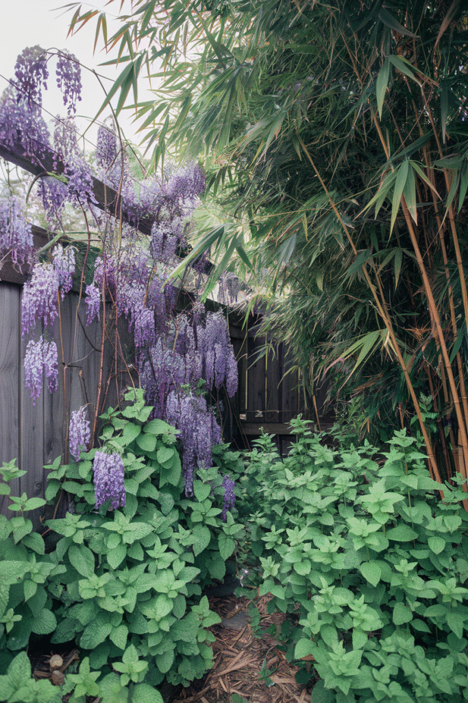
10 Plants Worth Making Room For
1. Caladiums
Not every plant needs to flower to earn its spot. Caladiums skip blooms entirely and rely purely on leaves that look almost hand-painted, red, pink, white, and green swirled together.
They're built for shady spots where flowering plants usually struggle, which makes them a genuinely useful problem-solver, not just a pretty addition.
The tubers can be dug up and overwintered indoors in colder climates, so one good caladium investment can come back year after year.
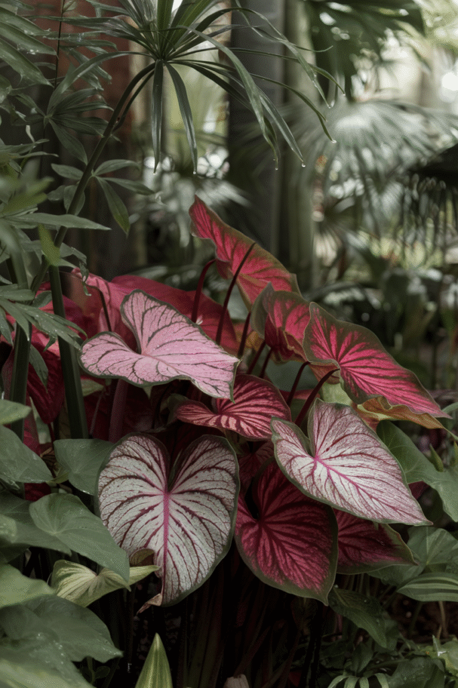
2. Succulents
If your track record with plants is rocky, succulents genuinely don't hold it against you. Give them sun and mostly leave them alone, and they'll outlast nearly everything else you're fussing over.
Sedum works beautifully as ground cover, hens and chicks multiply on their own without any help, and echeveria brings that rosette shape that looks almost too styled to be real.
A shallow dish of mixed succulents takes almost no upkeep and still looks considered sitting on a table or ledge.
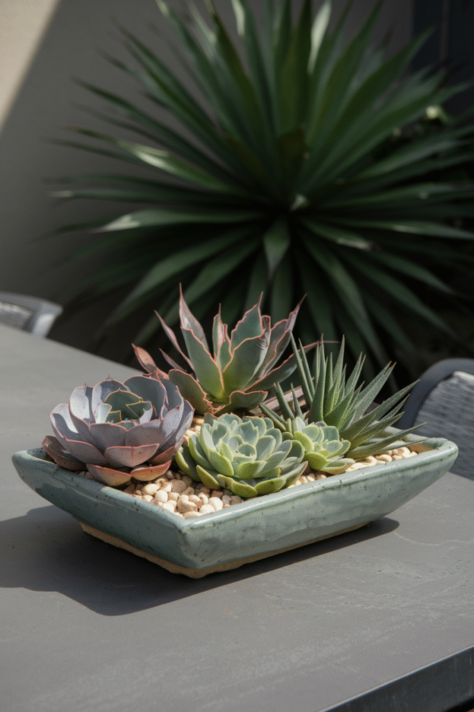
3. Marigolds
Marigolds get dismissed as basic more often than they deserve. In reality, they're doing quiet, genuinely useful work in the background of a lot of gardens.
They repel a long list of common pests, aphids and nematodes in particular steer clear of them, while blooming steadily in bold orange and red tones the entire season.
Tuck a border of them around your vegetable beds, alongside tomatoes especially. Your other plants genuinely benefit from the company.
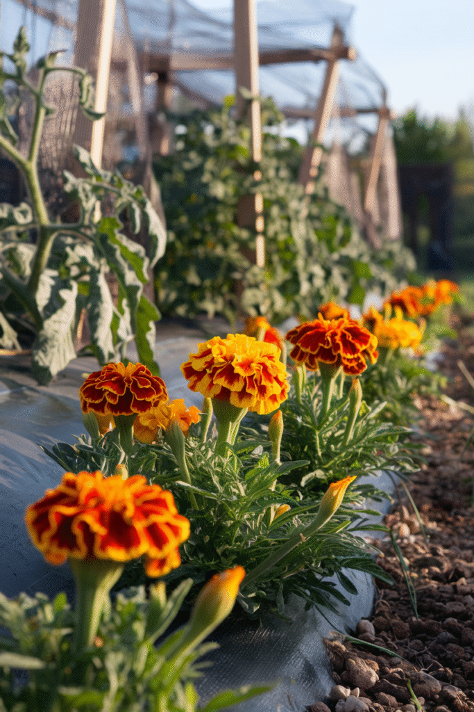
4. Hydrangeas
Hydrangeas bring the drama, in the best possible way. Big, full blooms and color that can genuinely shift depending on your soil's pH, it's basically garden chemistry disguised as decoration.
They do best with morning sun and afternoon shade, so give some thought to placement before committing a whole bed to them.
A well-established hydrangea reads as a bit of a splurge even when it isn't, they have a way of making the rest of the garden look slightly more put-together by association.
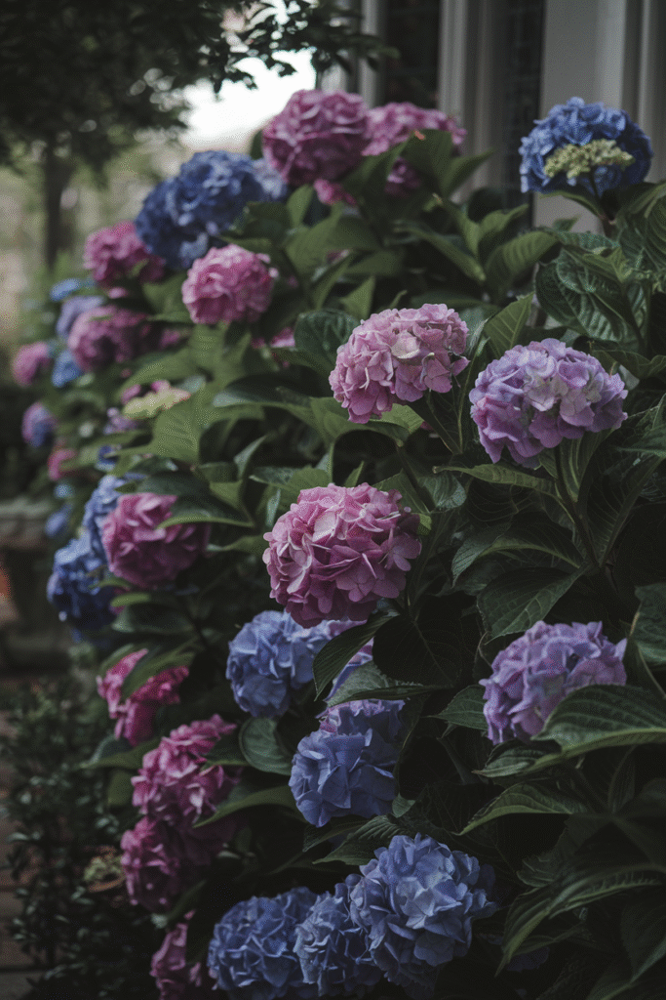
5. Coneflowers
Coneflowers, or echinacea, are about as low-drama as a flowering perennial gets. Drought, heat, a few missed waterings, none of it seems to faze them.
They're genuine pollinator magnets, bees and butterflies gravitate to them constantly, and because they're perennial you really do plant once and enjoy them for years.
Their purple-pink petals around that bold orange center give a garden real texture, especially planted in a loose cluster rather than a single tidy row.
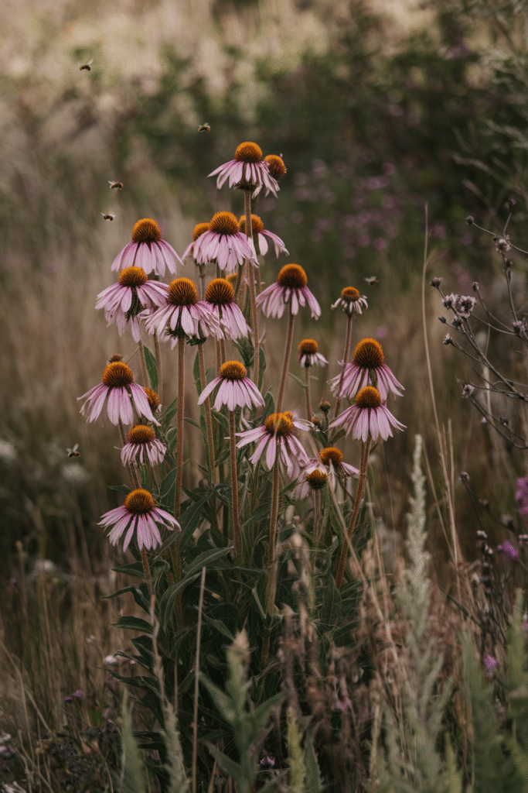
6. Herbs
A garden without a few herbs tucked in somewhere is leaving a lot on the table, literally. They're easy, they smell wonderful brushing past them, and they double as free seasoning all season long.
Basil pairs naturally with your tomatoes. Rosemary is tough and fragrant and good on nearly everything roasted. Thyme stays low and tidy. Mint is wonderful, just keep it contained in a pot, because it will absolutely take over open ground given the chance.
A small labeled herb box makes the whole garden feel more purposeful, even if most days you're just grabbing a few leaves for dinner.
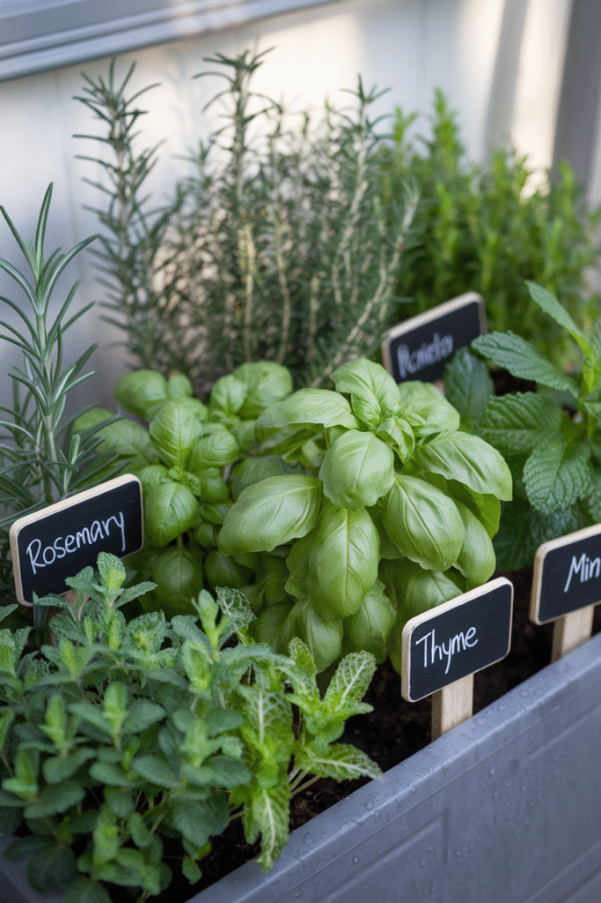
7. Zinnias
If you want color that genuinely pops and keeps going, zinnias are hard to beat. They grow almost carelessly fast and bloom from early summer straight through the first frost.
Butterflies and pollinators treat a zinnia bed like a destination, and the blooms hold up beautifully as cut flowers if you want to bring some indoors.
A packet of seeds and a little patience is genuinely all it takes. Within a month you'll have a border that looks far more deliberate than the effort it actually required.
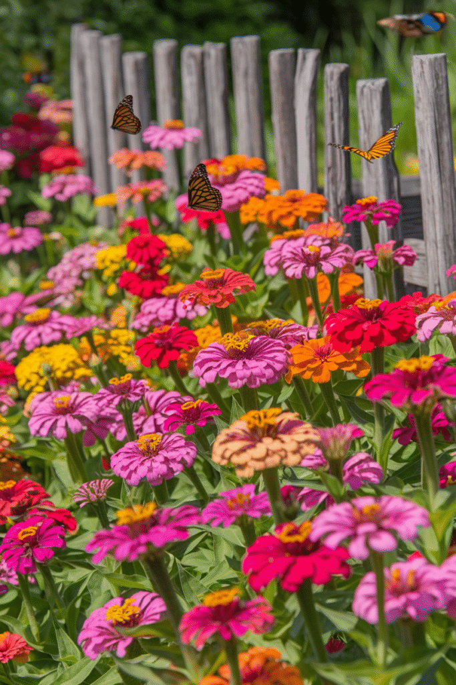
8. Hostas
Every garden has that shady corner that never quite works. Hostas are the fix, they genuinely don't care about sun and thrive in the exact spots most flowering plants give up on.
They're close to impossible to mess up, they spread on their own over time, and the range of leaf colors and textures available means they never look like one-note filler.
A full hosta bed reads almost sculptural rather than purely decorative, a nice contrast to a garden that's otherwise full of color and movement.
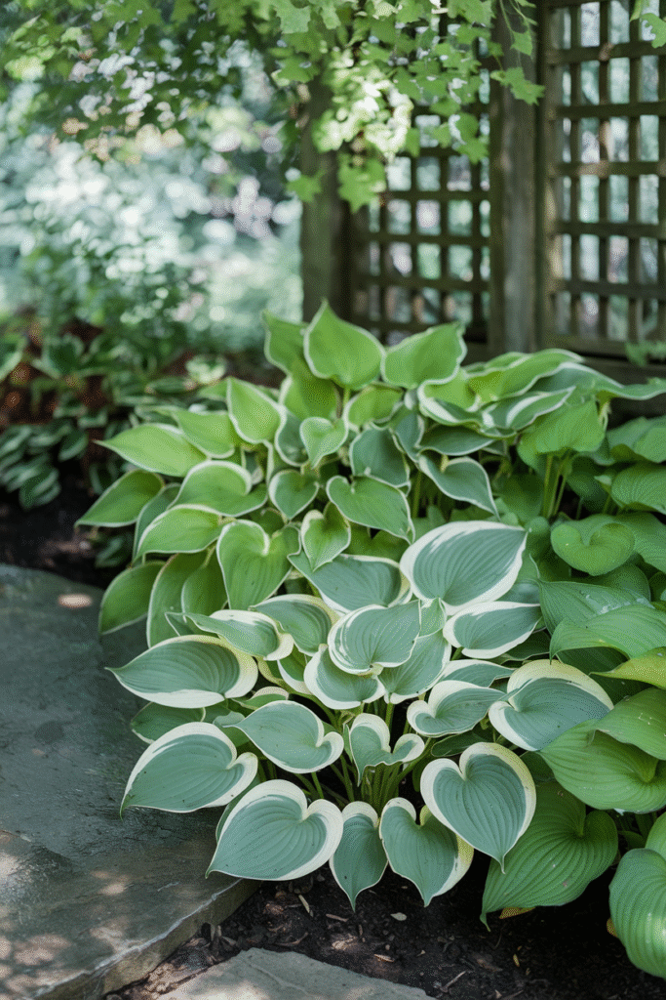
9. Tomatoes
Growing your own tomatoes is close to a rite of passage, and once you've had a sun-warmed one straight off the vine, grocery store tomatoes stop making sense.
Give them full sun and real space, they're demanding plants and they know it. Stake or cage them early, before they sprawl everywhere and turn your bed into a tangle.
If you want fruit all season instead of one big harvest, go with an indeterminate variety. They'll keep producing steadily instead of dumping everything on you at once.
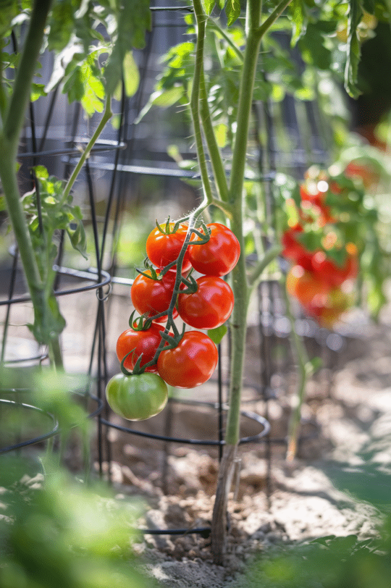
10. Lavender
Lavender is close to a guaranteed win no matter your growing zone. It smells incredible, looks effortlessly pretty, and the bees treat it like the neighborhood hotspot.
It's genuinely drought-tolerant once established, which makes it one of the lowest-maintenance plants you can add. Brush past it on a hot afternoon and the smell alone makes the whole garden feel more intentional.
Plant it somewhere you'll actually walk past often. Half the appeal is catching that scent on your way by, not just seeing it from a distance.
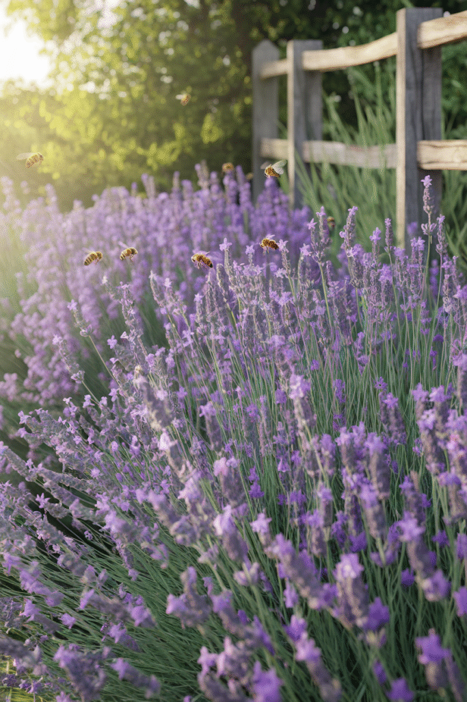
Final Thoughts
A garden should genuinely bring you real joy, not just mirror whatever happens to be trending that particular season. Skip the pressure to replicate someone else's yard.
Stick with plants that are already proven to perform well, the ten listed here make for a genuinely strong starting list, and build outward gradually from there as you learn what your specific space actually wants.
The best gardens aren't actually the most elaborate ones out there. They're the ones that keep showing up reliably for you, year after year, with very little drama involved.